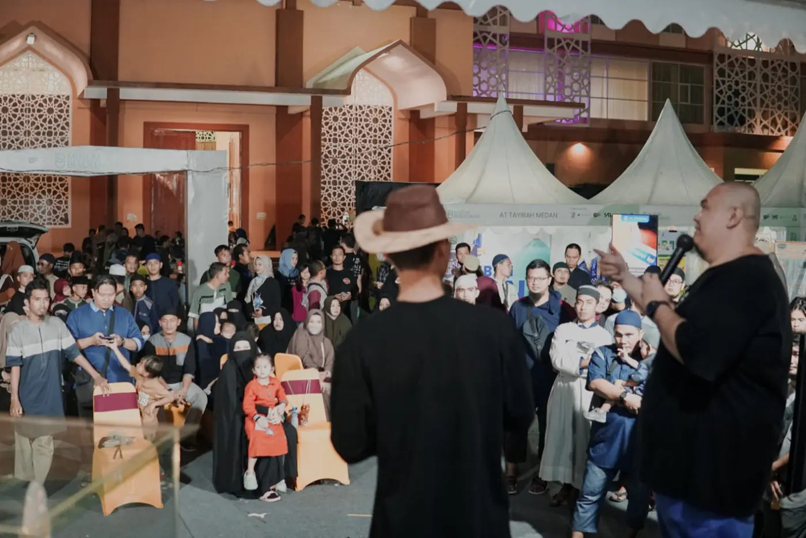

Komplek Lapangan Asrama Haji Medan
Jl. Jenderal Besar A.H. Nasution, Medan
- Tanggal
- 23–27 Desember 2026
- Jam buka
- 08.00–21.00 WIB
Muslim Berdedikasi 9 Generasi Berdedikasi Di Masa Depan

Tumbuh Berdedikasi, Mengukir Masa Depan
Muslim Berdedikasi 9 adalah Islamic Family Festival 5 hari berturut-turut yang dirancang sebagai oase ilmu, kesehatan, dan kebersamaan di penghujung tahun 2026. Mengusung tema “Generasi Berdedikasi Di Masa Depan”, kegiatan ini hadir untuk mendorong lahirnya generasi yang berilmu, peduli, dan memiliki semangat dedikasi dalam memberikan manfaat bagi keluarga, masyarakat, dan masa depan.
Ajak seluruh anggota keluarga Anda untuk merasakan paduan sempurna antara Kajian Ilmiah intensif, Layanan Sosial GRATIS berskala besar, kompetisi inspiratif, dan pengalaman kuliner terbaik di satu tempat. Jadikan momen liburan ini sebagai investasi terbesar untuk iman, ilmu, dan kesehatan keluarga Anda.
Ini adalah kesempatan Anda untuk mendapatkan layanan profesional berkualitas gratis.
Open Gate Bazar & Foodcourt: 08.00 – 21.00 WIB
NB: Jadwal dapat berubah sewaktu-waktu. Terdapat jeda istirahat setiap memasuki waktu shalat. Mohon mengikuti pengumuman terbaru di lokasi acara.
Peta lokasi bazar, panggung utama, dan tenda makan pengunjung. Arahkan kursor atau klikKetuk tenda untuk detail.
Filter kategori tenda
Denah interaktif. Arahkan kursor atau klikKetuk tenda untuk melihat nomor, kategori & nama tenant-nya. Pakai filter kategori untuk menyorot satu jenis tenda.
0 brand pilihan siap meramaikan Open Gate Bazar & Foodcourt.
Brand tidak ditemukan.